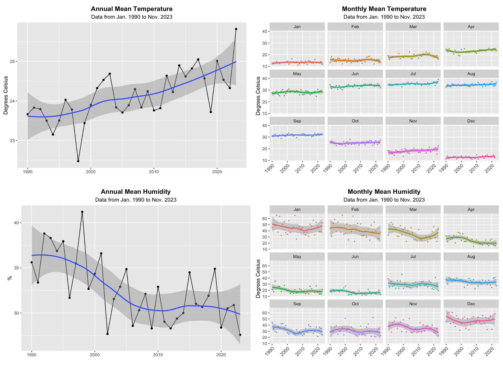
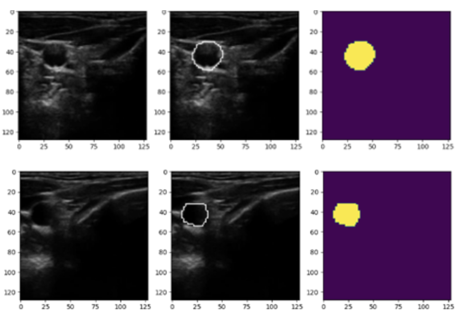
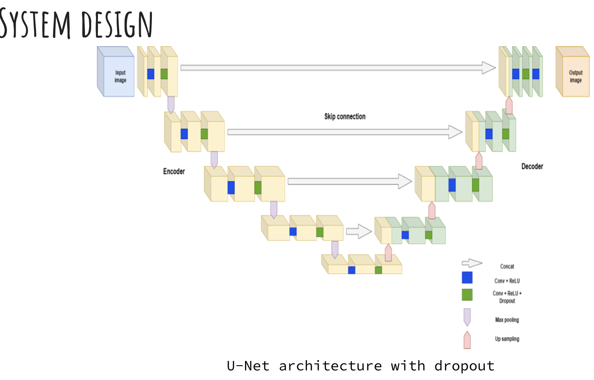
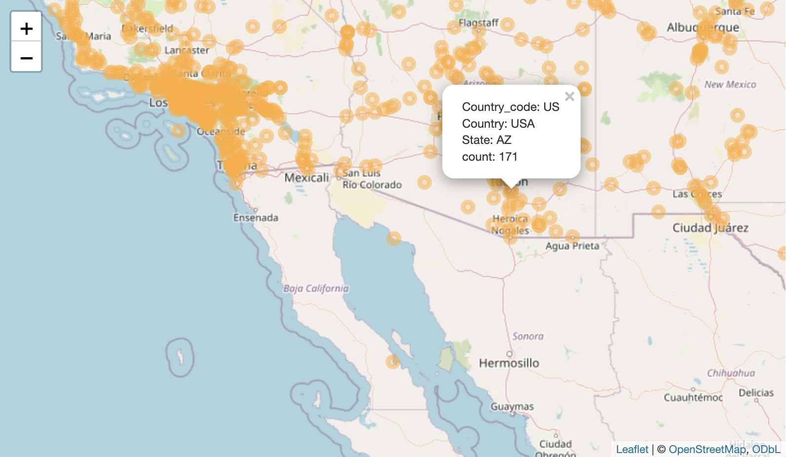
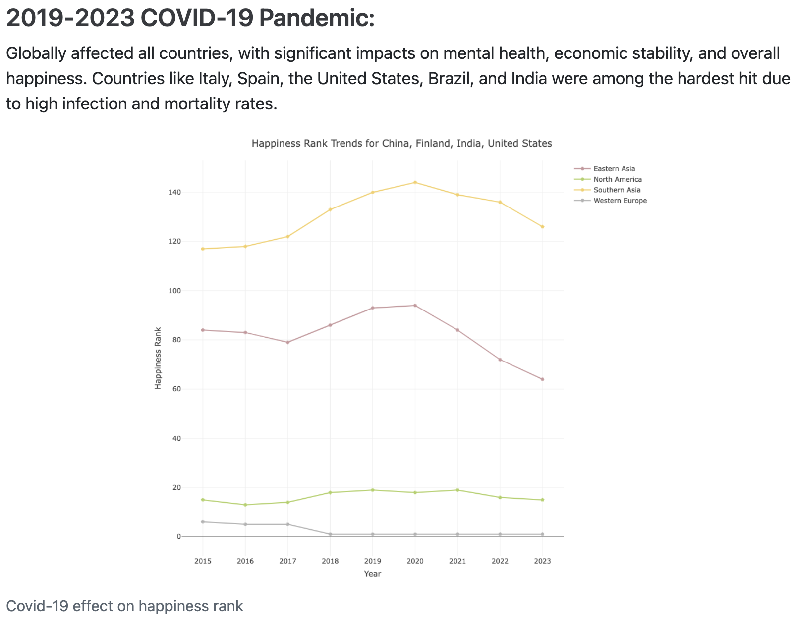
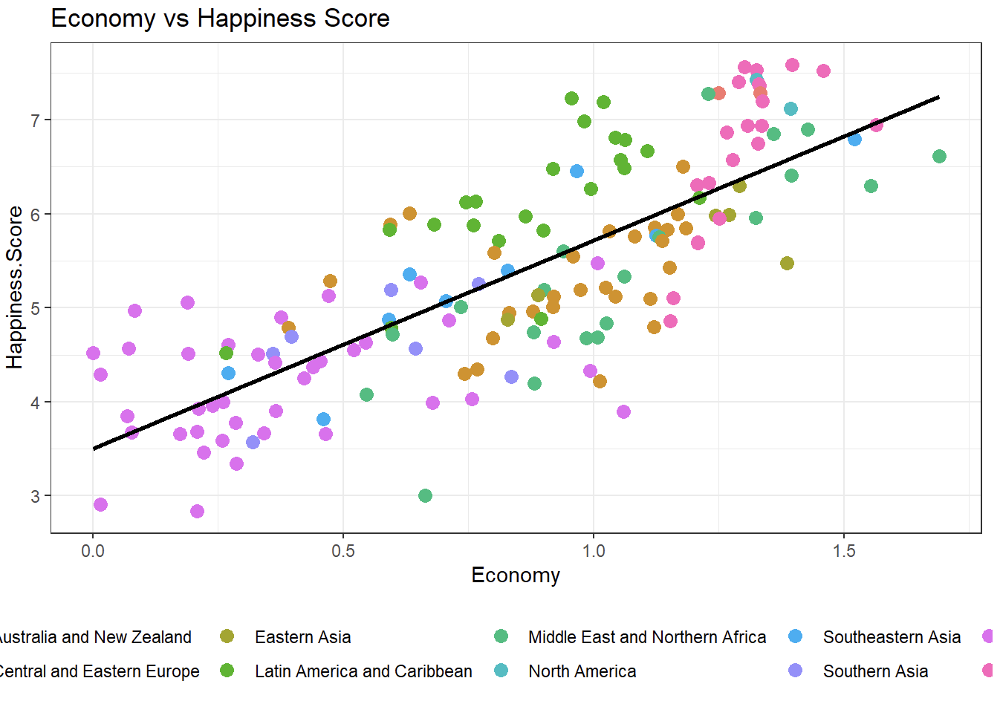
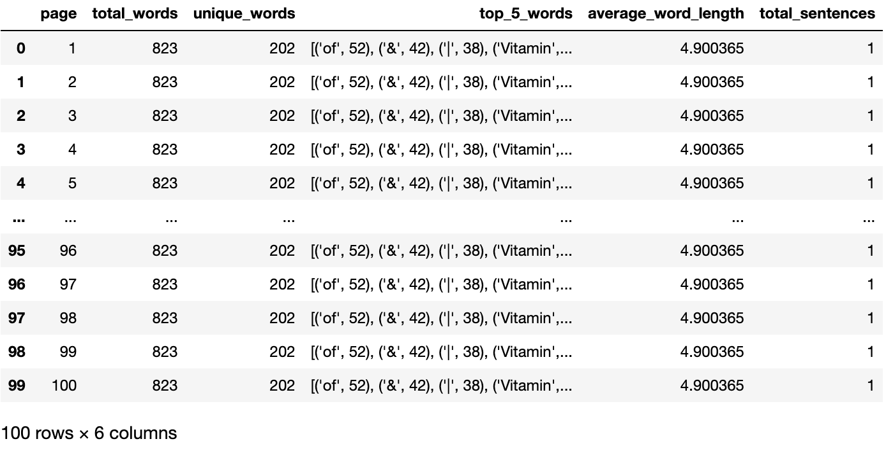
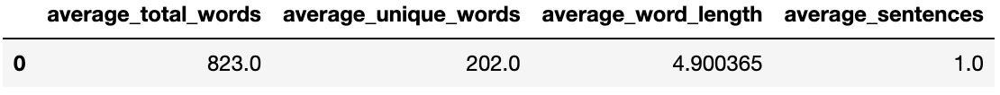

❄️🌞 Predicting Abnormal Climate in Arizona

- Directed a comprehensive project to forecast climate trends in Arizona using advanced data mining techniques.
- Data Source: Utilized a dataset from Visual Crossing Weather Data, spanning from 1970 to 2023, including key variables like temperature, precipitation, wind speed, and cloud cover.
- Exploratory Data Analysis: Conducted scatter plots, box plots, and correlation heatmaps to visualize trends and feature correlations.
- Clustering Analysis:
- K-means Clustering: Identified three distinct weather patterns:
- Cluster 1: Moderate cloud cover with mixed precipitation.
- Cluster 2: Clear, sunny, and dry conditions.
- Cluster 3: Overcast, rainy days with higher humidity.
- K-means Clustering: Identified three distinct weather patterns:
- Association Analysis:
- Applied the Apriori algorithm to reveal patterns such as low humidity correlating with reduced precipitation likelihood.
- Predictive Modeling:
- LSTM Network: Achieved a mean absolute error of 0.526 for temperature predictions.
- Feedforward Neural Network: Achieved a mean absolute error of 0.639, demonstrating robust performance.
- Key Contributions:
- Enhanced understanding of Arizona’s weather patterns.
- Developed effective temperature trend predictions.
- Provided valuable insights for future climate studies.
- Coordinated efforts in clustering, association, and predictive modeling, ensuring successful project outcomes.
🫀🩺 Segmentation and Refinement of Carotid Artery
 
Collaborated in a comprehensive project to segment and refine carotid artery images using advanced deep learning techniques.
Problem Statement: Aimed to identify the location of carotid arteries in ultrasound images to aid in the early diagnosis and treatment of plaque buildup, which is crucial for reducing stroke risk.
Motivation: Addressed the need to evaluate blood flow, locate clotted blood, and assess stent placement effectiveness through precise segmentation of carotid arteries.
Data Acquisition: Utilized a dataset of 1,100 ultrasound images, resized and annotated for accurate model training.
Model Development:
Traditional U-Net: Implemented a U-Net architecture for initial segmentation.
Enhanced U-Net with Dropout: Developed an improved model with additional dropout layers in each convolutional layer to increase segmentation accuracy.
Performance Metrics:
Dice Coefficient: Achieved an impressive dice coefficient of 87.86% after 300 epochs with the enhanced U-Net model, compared to 79.82% with the traditional U-Net.
Data Utilization: Demonstrated improved performance with a dice score increase from 72.62% to 80.84% by leveraging a larger dataset and optimizing hyperparameters.
Key Contributions:
Enhanced segmentation accuracy for medical imaging.
Improved model reliability through extensive training and validation.
Published both a Survey Paper and a Research Paper, contributing valuable insights to the field of medical image segmentation.
👽🛸 Alien Encounters

Problem Statement: Investigate and visualize the patterns and characteristics of UFO sightings globally to uncover intriguing insights into these unexplained phenomena.
Motivation: Provide data-driven analysis and visualizations to understand UFO sightings better and explore potential patterns and hotspots globally.
Data Acquisition: Utilized a comprehensive dataset from the TidyTuesday project, featuring over 19,000 UFO sighting reports, including temporal, spatial, and qualitative details.
Models and Techniques Used:
Bubble Maps: Created to display geographical locations and frequencies of UFO sightings using longitude and latitude data.
Circular Packing: Employed for hierarchical visualization, showing the number of sightings per country and continent.
Density Plots: Used to identify trends in UFO sightings over the years.
Bar Charts: Analyzed the distribution of sightings across different parts of the day.
Performance Metrics:
Global Distribution Analysis: Visualized UFO sightings on a world map to identify geographical patterns.
Temporal Trends: Evaluated yearly trends showing an increase in sightings since the early 21st century.
Diurnal Patterns: Found that the highest number of sightings (47,372) occurred during the night, with significantly fewer sightings during the day and twilight periods.
Key Contributions:
Interactive World Map: Contributed to answering Question 1 by creating an interactive plot with a world map showing UFO sightings at each location globally.
Clustering Analysis: Identified significant clusters of UFO sightings using geographical data.
Association Analysis: Uncovered associations between sightings and specific time periods or geographical regions.
Exploratory Data Analysis (EDA): Conducted EDA to understand data distribution, which informed subsequent visualization and modeling efforts.
😊️📈 World Happiness Report
 
Problem Statement: Investigate and visualize the factors influencing global happiness and how major events impact happiness scores from 2015-2023.
Motivation: Provide a user-friendly platform to transform complex data from the World Happiness Report into accessible insights, aiding researchers, policymakers, and the general public in understanding global well-being.
Data Acquisition: Cleaned and combined individual yearly data from the World Happiness Report for the years 2015-2023, focusing on key happiness indicators such as GDP per capita, social support, life expectancy, freedom, trust, and generosity.
Models and Techniques Used:
Interactive Shiny Application: Developed for dynamic data visualization.
Scatter Plots and Time Series Graphs: Used to analyze trends in happiness scores.
Heatmaps and Choropleth Maps: Depicted happiness rankings across different countries.
Bar Charts: Illustrated the distribution of happiness scores across different parts of the day.
Performance Metrics:
Happiness Score Trends: Analyzed how happiness ranks of various countries shifted over the years.
Impact of Major Events: Evaluated the influence of global events such as the COVID-19 pandemic, Brexit, US-China trade war, and Pakistan floods on happiness scores.
Key Contributions:
Major Events Analysis: Contributed significantly to analyzing how major events from 2015-2023 impacted happiness scores across countries.
Exploratory Data Analysis (EDA): Conducted EDA to understand data distribution and inform visualization and modeling efforts.
Shiny App Development and Deployment: Developed and deployed an interactive Shiny app to visualize and analyze happiness data.
Scatter Plot: Created scatter plots to analyze the relationship between various factors and happiness scores, providing insights into what influences happiness globally.
🗣️🕸️ ️ NLP Statistics and web Scrapping


Problem Statement: Develop a comprehensive solution for web scraping and NLP analysis to generate and compare text statistics from health-related websites.
Motivation: Create a robust system to analyze and compare NLP statistics from a large dataset of health-related web pages, providing valuable insights into text patterns and trends.
Data Acquisition: Scraped around 100 web pages from a single health-related website, collecting data for NLP analysis.
Tasks and Contributions:
Web Scraping and NLP Statistics: Python scripts to scrape web pages and compute at least five NLP-related statistics per page, storing the results in a file.
Java Web Application Development: Developed a local web application in Java using the Spring framework to input text and generate NLP statistics similar to the earlier task.
Comparison Analysis: Implemented functionality to compare input text statistics with the aggregated results and display the comparison on a web page.
Key Contributions:
Web Scraping and NLP Statistics Generation: Developed efficient Python scripts for web scraping and NLP analysis, providing a comprehensive dataset for further study.
Java Web Application: Built a user-friendly Java web application to facilitate NLP analysis and comparison, enhancing accessibility and usability.
Data Aggregation and Comparison: Compiled and compared NLP statistics to provide meaningful insights into text patterns, improving understanding of health-related web content.